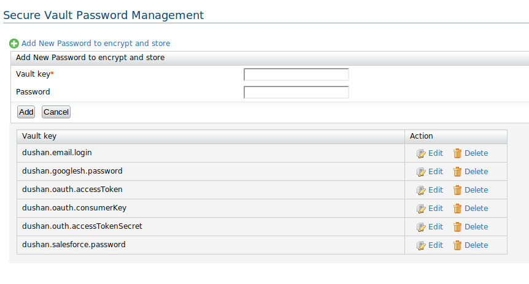

WSO2 ESB 4.8.0 onwards a UI component has been shipped to secure all the in-line passwords configured in ESB synapse configuration. This guide describes how mediation security component can be configured for use effectively.
Since the Mediation Security implementation has been based on the WSO2 Carbon Secure Vault API, it's required that the user need to run pre Cipher tool configuration script to setup the secure vault environment
e.g secret-conf.properties
keystore.identity.location=ESB_HOME/repository/resources/security/wso2carbon.jks
keystore.identity.type=JKS
keystore.identity.store.password=identity.store.password
keystore.identity.store.secretProvider=com.sample.password.callback.handler.HardCodedSecretCallbackHandler
secretRepositories.file.provider=org.wso2.securevault.secret.repository.FileBaseSecretRepositoryProvider
secretRepositories.file.location=repository/conf/security/cipher-text.properties
secretRepositories=file
keystore.identity.key.password=identity.key.password
carbon.secretProvider=org.wso2.securevault.secret.handler.SecretManagerSecretCallbackHandler
keystore.identity.key.secretProvider=com.sample.password.callback.handler.HardCodedSecretCallbackHandler
keystore.identity.alias=wso2carbon

Figure 1: Secure Vault password management tool list view
<twitter.config>
<consumerSecret>xx</oauth.consumerSecret>
<accessTokenSecret>{wso2:vault-lookup('xx')}</accessTokenSecret>
<accessToken>{wso2:vault-lookup('xx')}</accessToken>
<consumerKey>{wso2:vault-lookup('xx')}</consumerKey>
</twitter.config>